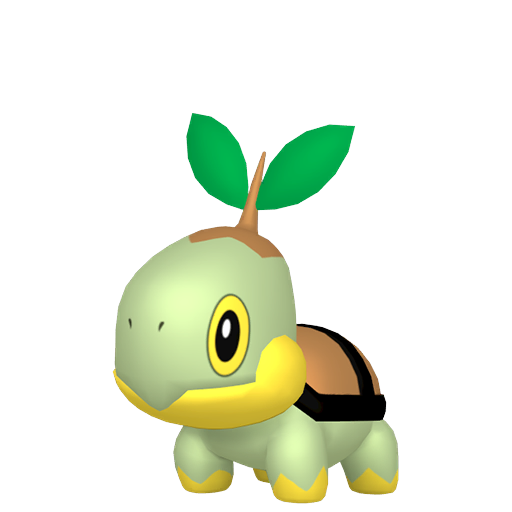
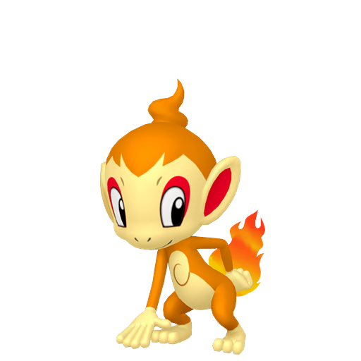
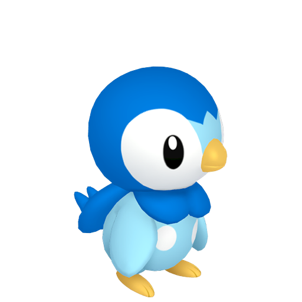

Ereditarietà: Con la Gen 4 arrivano gli oggetti per il breeding (come i Vigore), che permettono a un genitore di trasmettere un IV specifico alla prole. In Gen 6, l'oggetto Destincomune estende questa capacità a ben cinque statistiche.